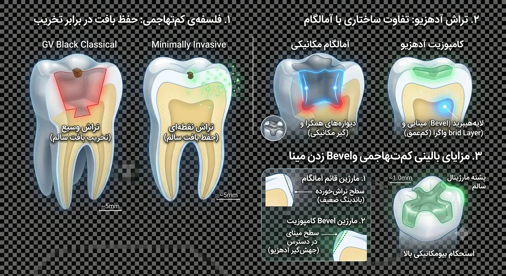

نسخه استخراجشده؛ ترجمه یا تأیید علمی انجام نشده است. وضعیت: incomplete
(توضیح تصویر: این دیاگرام شفاف، مقایسهی دو رویکرد را نشان میدهد. سمت چپ (GV Black Classical): یک دندان با پوسیدگیِ کوچک (قهوهای) را نشان میدهد که برای جایگذاری آمالگام، تراشِ وسیع (قرمز) شاملِ همگرایی دیوارهها و حذف پشتهی مارژینال (Extension for Prevention) انجام شده است. سمت راست (Minimally Invasive): همان پوسیدگیِ کوچک با یک تراشِ بسیار ظریف و نقطه ای (سبز) فقط در حد حذف بافتِ بیمار برداشت شده و بافت سالم (Dovetail) حفظ شده است.)
دندانپزشکی کمتهاجمی (MI) بر پایهی حفظ حداکثری بافت سالمِ دندان (Conservation) استوار است و به طور بنیادی با رویکرد کلاسیک تفاوت دارد (با رفرنس به تصویر بالا):
🔑 اصول بنیادین (با رفرنس به تصویر):
حفظ بافت سالم (Conservation): MI هدفش برداشتنِ فقط بافتِ بیمار (پوسیده) است، نه تراش بافتِ سالم برای تامین فرمهای مکانیکی (سمت راست تصویر).
حذف "Extension for Prevention": در MI، دیگر نیازی به تراشِ وسیعِ شیارهایِ سالم (Dovetail) برای جلوگیری از پوسیدگیِ آینده (که GV Black توصیه میکرد) نیست (سمت چپ تصویر).
علت: کامپوزیت به کمک آدهزیو به دندان میچسبد و نیاز به قفلهای مکانیکی مخرب را از بین میبرد.

طراحی حفره در دندانپزشکی آدهزیو به طور کامل تابعِ خواصِ مادهی ترمیمی است و با آمالگام تفاوت دارد :
🔑 تفاوتهای کلیدی:
فرم گیر (Retention):
آمالگام: نیازمند دیوارههایِ همگرا و آندرکات برای قفل مکانیکی است .
کامپوزیت: به کمک لایههیبرید (Hybrid Layer) و پیوندِ مایکرو-مکانیکال به دندان میچسبد.
عمق حفره:
آمالگام: نیازمند عمقِ حداقل ۱.۵ میلیمتر برای مقاومت است.
کامپوزیت: عمق میتواند بسیار کمتر باشد؛ زیرا کامپوزیت با چسبندگی قوی، دیوارههای دندان را تقویت میکند.
زوایای داخلی: در کامپوزیت باید گرد (Rounded) باشند تا از تمرکز استرس جلوگیری شود (یادآوری از Lesson 1.3.4).
آمادهسازی کمتهاجمی و استفاده از تکنیک Bevel مزایای بالینی فوقالعادهای دارد :
🔑 مزایای Bevel زدن مینا (با رفرنس به تصویر):
افزایش گیر آدهزیو: Bevel سطح مینای در دسترس برای اتچینگ را به طور چشمگیری افزایش میدهد .
قطع بهینهی منشورها: Bevel باعث قطعِ عمودیِ منشورهایِ مینایی میشود که بهترین الگوی اتچینگ و قفلِ مایکرو-مکانیکال را ایجاد میکند .
زیبایی: Bevel باعثِ محو شدنِ لبهیِ ترمیم و همرنگیِ بهتر با دندان میشود.
🔑 مزایای کلی کمتهاجمی (سمت راست تصویر):
حفظ استحکام دندان: با حفظ پشتههای مارژینال و کاسپها، دندان در برابر نیروها قویتر باقی میماند.
حفاظت از پالپ: تراشهای کمعمقتر خطر آسیب به پالپ را کم میکنند.